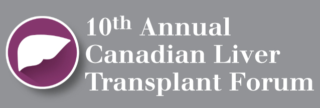

Canadian Transplant Conference Series
WELCOME
Welcome to the Canadian Transplant Conference Series home page. This site will serve as a news and information hub to the Canadian Kidney and Liver Transplant Forums and the Canadian Transplant Fellows Symposium. Please visit it often as new program information becomes available. We hope you will find this site to be a comprehensive and educational transplant resource.


Please Login:
Other 2015/2016 Transplant Conferences of Interest
For questions about this site or any symposium please email
CdnTxConferenceSeries@stacom.com
Funded through an educational grant from